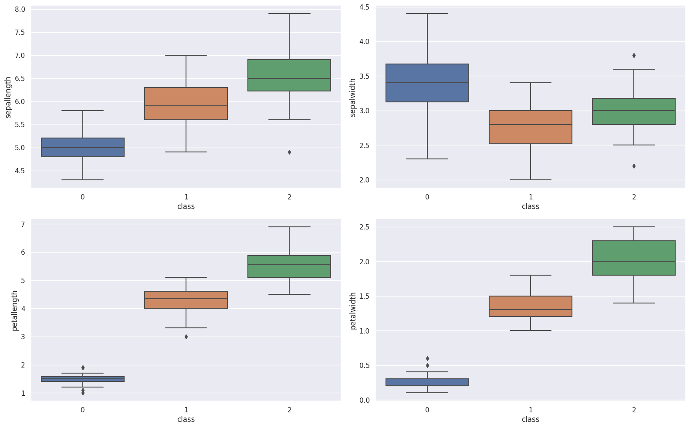
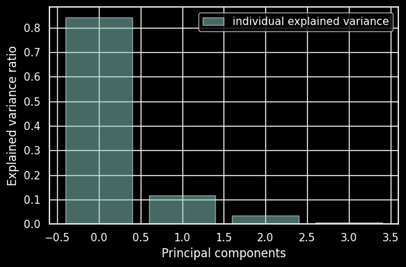

Implementasi iris menggunakan model PCA#
import numpy as np # linear algebra
import pandas as pd # data processing, CSV file I/O (e.g. pd.read_csv)
from sklearn import datasets
from sklearn.model_selection import train_test_split
from sklearn.neighbors import KNeighborsClassifier
import seaborn as sns
sns.set()
import matplotlib.pyplot as plt
import os
import pickle
from sklearn.neighbors import KNeighborsRegressor
from sklearn.preprocessing import LabelEncoder
datairis="https://raw.githubusercontent.com/cindylmr19/dataset/main/iris.csv"
iris=pd.read_csv(datairis)
iris.info()
<class 'pandas.core.frame.DataFrame'>
RangeIndex: 150 entries, 0 to 149
Data columns (total 5 columns):
# Column Non-Null Count Dtype
--- ------ -------------- -----
0 sepallength 150 non-null float64
1 sepalwidth 150 non-null float64
2 petallength 150 non-null float64
3 petalwidth 150 non-null float64
4 class 150 non-null object
dtypes: float64(4), object(1)
memory usage: 6.0+ KB
iris.describe()
| sepallength | sepalwidth | petallength | petalwidth | |
|---|---|---|---|---|
| count | 150.000000 | 150.000000 | 150.000000 | 150.000000 |
| mean | 5.843333 | 3.054000 | 3.758667 | 1.198667 |
| std | 0.828066 | 0.433594 | 1.764420 | 0.763161 |
| min | 4.300000 | 2.000000 | 1.000000 | 0.100000 |
| 25% | 5.100000 | 2.800000 | 1.600000 | 0.300000 |
| 50% | 5.800000 | 3.000000 | 4.350000 | 1.300000 |
| 75% | 6.400000 | 3.300000 | 5.100000 | 1.800000 |
| max | 7.900000 | 4.400000 | 6.900000 | 2.500000 |
iris.head(150)
| sepallength | sepalwidth | petallength | petalwidth | class | |
|---|---|---|---|---|---|
| 0 | 5.1 | 3.5 | 1.4 | 0.2 | Iris-setosa |
| 1 | 4.9 | 3.0 | 1.4 | 0.2 | Iris-setosa |
| 2 | 4.7 | 3.2 | 1.3 | 0.2 | Iris-setosa |
| 3 | 4.6 | 3.1 | 1.5 | 0.2 | Iris-setosa |
| 4 | 5.0 | 3.6 | 1.4 | 0.2 | Iris-setosa |
| ... | ... | ... | ... | ... | ... |
| 145 | 6.7 | 3.0 | 5.2 | 2.3 | Iris-virginica |
| 146 | 6.3 | 2.5 | 5.0 | 1.9 | Iris-virginica |
| 147 | 6.5 | 3.0 | 5.2 | 2.0 | Iris-virginica |
| 148 | 6.2 | 3.4 | 5.4 | 2.3 | Iris-virginica |
| 149 | 5.9 | 3.0 | 5.1 | 1.8 | Iris-virginica |
150 rows × 5 columns
iris_copy = iris.copy()
iris_copy.isnull().sum()
sepallength 0
sepalwidth 0
petallength 0
petalwidth 0
class 0
dtype: int64
le = LabelEncoder()
iris_copy['class'] = le.fit_transform(iris_copy['class'])
# Get features and target
X = iris_copy[['sepallength', 'sepalwidth', 'petallength', 'petalwidth']]
y = iris_copy['class']
species_column = iris_copy['class']
iris_copy = iris_copy[['sepallength', 'sepalwidth', 'petallength', 'petalwidth']].copy()
iris_copy = (iris_copy - iris_copy.min())/(iris_copy.max() - iris_copy.min())
iris_copy['class'] = species_column.copy()
iris_copy.head(150)
| sepallength | sepalwidth | petallength | petalwidth | class | |
|---|---|---|---|---|---|
| 0 | 0.222222 | 0.625000 | 0.067797 | 0.041667 | 0 |
| 1 | 0.166667 | 0.416667 | 0.067797 | 0.041667 | 0 |
| 2 | 0.111111 | 0.500000 | 0.050847 | 0.041667 | 0 |
| 3 | 0.083333 | 0.458333 | 0.084746 | 0.041667 | 0 |
| 4 | 0.194444 | 0.666667 | 0.067797 | 0.041667 | 0 |
| ... | ... | ... | ... | ... | ... |
| 145 | 0.666667 | 0.416667 | 0.711864 | 0.916667 | 2 |
| 146 | 0.555556 | 0.208333 | 0.677966 | 0.750000 | 2 |
| 147 | 0.611111 | 0.416667 | 0.711864 | 0.791667 | 2 |
| 148 | 0.527778 | 0.583333 | 0.745763 | 0.916667 | 2 |
| 149 | 0.444444 | 0.416667 | 0.694915 | 0.708333 | 2 |
150 rows × 5 columns
data1 = iris.drop(columns=['class'])
data1.head(150)
| sepallength | sepalwidth | petallength | petalwidth | |
|---|---|---|---|---|
| 0 | 5.1 | 3.5 | 1.4 | 0.2 |
| 1 | 4.9 | 3.0 | 1.4 | 0.2 |
| 2 | 4.7 | 3.2 | 1.3 | 0.2 |
| 3 | 4.6 | 3.1 | 1.5 | 0.2 |
| 4 | 5.0 | 3.6 | 1.4 | 0.2 |
| ... | ... | ... | ... | ... |
| 145 | 6.7 | 3.0 | 5.2 | 2.3 |
| 146 | 6.3 | 2.5 | 5.0 | 1.9 |
| 147 | 6.5 | 3.0 | 5.2 | 2.0 |
| 148 | 6.2 | 3.4 | 5.4 | 2.3 |
| 149 | 5.9 | 3.0 | 5.1 | 1.8 |
150 rows × 4 columns
ubah dalam bentuk numerik#
## Label encoding since the algorithms we are going to use do not take non numerical or boolean data as inputs
iris['class'].replace({'Iris-setosa':0,'Iris-versicolor':1, 'Iris-virginica':2},inplace=True)
fig,ax = plt.subplots(nrows = 2, ncols=2, figsize=(16,10))
row = 0
col = 0
for i in range(len(iris.columns) -1):
if col > 1:
row += 1
col = 0
axes = ax[row,col]
sns.boxplot(x = iris['class'], y = iris[iris.columns[i]],ax = axes)
col += 1
plt.tight_layout()
# plt.title("Individual Features by Class")
plt.show()

X = iris.drop (['class'], axis=1)
y = iris['class']
minmax scalar#
X
| sepallength | sepalwidth | petallength | petalwidth | |
|---|---|---|---|---|
| 0 | 5.1 | 3.5 | 1.4 | 0.2 |
| 1 | 4.9 | 3.0 | 1.4 | 0.2 |
| 2 | 4.7 | 3.2 | 1.3 | 0.2 |
| 3 | 4.6 | 3.1 | 1.5 | 0.2 |
| 4 | 5.0 | 3.6 | 1.4 | 0.2 |
| ... | ... | ... | ... | ... |
| 145 | 6.7 | 3.0 | 5.2 | 2.3 |
| 146 | 6.3 | 2.5 | 5.0 | 1.9 |
| 147 | 6.5 | 3.0 | 5.2 | 2.0 |
| 148 | 6.2 | 3.4 | 5.4 | 2.3 |
| 149 | 5.9 | 3.0 | 5.1 | 1.8 |
150 rows × 4 columns
from sklearn.preprocessing import MinMaxScaler
scaler = MinMaxScaler()
X=scaler.fit_transform(X)
X
array([[0.22222222, 0.625 , 0.06779661, 0.04166667],
[0.16666667, 0.41666667, 0.06779661, 0.04166667],
[0.11111111, 0.5 , 0.05084746, 0.04166667],
[0.08333333, 0.45833333, 0.08474576, 0.04166667],
[0.19444444, 0.66666667, 0.06779661, 0.04166667],
[0.30555556, 0.79166667, 0.11864407, 0.125 ],
[0.08333333, 0.58333333, 0.06779661, 0.08333333],
[0.19444444, 0.58333333, 0.08474576, 0.04166667],
[0.02777778, 0.375 , 0.06779661, 0.04166667],
[0.16666667, 0.45833333, 0.08474576, 0. ],
[0.30555556, 0.70833333, 0.08474576, 0.04166667],
[0.13888889, 0.58333333, 0.10169492, 0.04166667],
[0.13888889, 0.41666667, 0.06779661, 0. ],
[0. , 0.41666667, 0.01694915, 0. ],
[0.41666667, 0.83333333, 0.03389831, 0.04166667],
[0.38888889, 1. , 0.08474576, 0.125 ],
[0.30555556, 0.79166667, 0.05084746, 0.125 ],
[0.22222222, 0.625 , 0.06779661, 0.08333333],
[0.38888889, 0.75 , 0.11864407, 0.08333333],
[0.22222222, 0.75 , 0.08474576, 0.08333333],
[0.30555556, 0.58333333, 0.11864407, 0.04166667],
[0.22222222, 0.70833333, 0.08474576, 0.125 ],
[0.08333333, 0.66666667, 0. , 0.04166667],
[0.22222222, 0.54166667, 0.11864407, 0.16666667],
[0.13888889, 0.58333333, 0.15254237, 0.04166667],
[0.19444444, 0.41666667, 0.10169492, 0.04166667],
[0.19444444, 0.58333333, 0.10169492, 0.125 ],
[0.25 , 0.625 , 0.08474576, 0.04166667],
[0.25 , 0.58333333, 0.06779661, 0.04166667],
[0.11111111, 0.5 , 0.10169492, 0.04166667],
[0.13888889, 0.45833333, 0.10169492, 0.04166667],
[0.30555556, 0.58333333, 0.08474576, 0.125 ],
[0.25 , 0.875 , 0.08474576, 0. ],
[0.33333333, 0.91666667, 0.06779661, 0.04166667],
[0.16666667, 0.45833333, 0.08474576, 0. ],
[0.19444444, 0.5 , 0.03389831, 0.04166667],
[0.33333333, 0.625 , 0.05084746, 0.04166667],
[0.16666667, 0.45833333, 0.08474576, 0. ],
[0.02777778, 0.41666667, 0.05084746, 0.04166667],
[0.22222222, 0.58333333, 0.08474576, 0.04166667],
[0.19444444, 0.625 , 0.05084746, 0.08333333],
[0.05555556, 0.125 , 0.05084746, 0.08333333],
[0.02777778, 0.5 , 0.05084746, 0.04166667],
[0.19444444, 0.625 , 0.10169492, 0.20833333],
[0.22222222, 0.75 , 0.15254237, 0.125 ],
[0.13888889, 0.41666667, 0.06779661, 0.08333333],
[0.22222222, 0.75 , 0.10169492, 0.04166667],
[0.08333333, 0.5 , 0.06779661, 0.04166667],
[0.27777778, 0.70833333, 0.08474576, 0.04166667],
[0.19444444, 0.54166667, 0.06779661, 0.04166667],
[0.75 , 0.5 , 0.62711864, 0.54166667],
[0.58333333, 0.5 , 0.59322034, 0.58333333],
[0.72222222, 0.45833333, 0.66101695, 0.58333333],
[0.33333333, 0.125 , 0.50847458, 0.5 ],
[0.61111111, 0.33333333, 0.61016949, 0.58333333],
[0.38888889, 0.33333333, 0.59322034, 0.5 ],
[0.55555556, 0.54166667, 0.62711864, 0.625 ],
[0.16666667, 0.16666667, 0.38983051, 0.375 ],
[0.63888889, 0.375 , 0.61016949, 0.5 ],
[0.25 , 0.29166667, 0.49152542, 0.54166667],
[0.19444444, 0. , 0.42372881, 0.375 ],
[0.44444444, 0.41666667, 0.54237288, 0.58333333],
[0.47222222, 0.08333333, 0.50847458, 0.375 ],
[0.5 , 0.375 , 0.62711864, 0.54166667],
[0.36111111, 0.375 , 0.44067797, 0.5 ],
[0.66666667, 0.45833333, 0.57627119, 0.54166667],
[0.36111111, 0.41666667, 0.59322034, 0.58333333],
[0.41666667, 0.29166667, 0.52542373, 0.375 ],
[0.52777778, 0.08333333, 0.59322034, 0.58333333],
[0.36111111, 0.20833333, 0.49152542, 0.41666667],
[0.44444444, 0.5 , 0.6440678 , 0.70833333],
[0.5 , 0.33333333, 0.50847458, 0.5 ],
[0.55555556, 0.20833333, 0.66101695, 0.58333333],
[0.5 , 0.33333333, 0.62711864, 0.45833333],
[0.58333333, 0.375 , 0.55932203, 0.5 ],
[0.63888889, 0.41666667, 0.57627119, 0.54166667],
[0.69444444, 0.33333333, 0.6440678 , 0.54166667],
[0.66666667, 0.41666667, 0.6779661 , 0.66666667],
[0.47222222, 0.375 , 0.59322034, 0.58333333],
[0.38888889, 0.25 , 0.42372881, 0.375 ],
[0.33333333, 0.16666667, 0.47457627, 0.41666667],
[0.33333333, 0.16666667, 0.45762712, 0.375 ],
[0.41666667, 0.29166667, 0.49152542, 0.45833333],
[0.47222222, 0.29166667, 0.69491525, 0.625 ],
[0.30555556, 0.41666667, 0.59322034, 0.58333333],
[0.47222222, 0.58333333, 0.59322034, 0.625 ],
[0.66666667, 0.45833333, 0.62711864, 0.58333333],
[0.55555556, 0.125 , 0.57627119, 0.5 ],
[0.36111111, 0.41666667, 0.52542373, 0.5 ],
[0.33333333, 0.20833333, 0.50847458, 0.5 ],
[0.33333333, 0.25 , 0.57627119, 0.45833333],
[0.5 , 0.41666667, 0.61016949, 0.54166667],
[0.41666667, 0.25 , 0.50847458, 0.45833333],
[0.19444444, 0.125 , 0.38983051, 0.375 ],
[0.36111111, 0.29166667, 0.54237288, 0.5 ],
[0.38888889, 0.41666667, 0.54237288, 0.45833333],
[0.38888889, 0.375 , 0.54237288, 0.5 ],
[0.52777778, 0.375 , 0.55932203, 0.5 ],
[0.22222222, 0.20833333, 0.33898305, 0.41666667],
[0.38888889, 0.33333333, 0.52542373, 0.5 ],
[0.55555556, 0.54166667, 0.84745763, 1. ],
[0.41666667, 0.29166667, 0.69491525, 0.75 ],
[0.77777778, 0.41666667, 0.83050847, 0.83333333],
[0.55555556, 0.375 , 0.77966102, 0.70833333],
[0.61111111, 0.41666667, 0.81355932, 0.875 ],
[0.91666667, 0.41666667, 0.94915254, 0.83333333],
[0.16666667, 0.20833333, 0.59322034, 0.66666667],
[0.83333333, 0.375 , 0.89830508, 0.70833333],
[0.66666667, 0.20833333, 0.81355932, 0.70833333],
[0.80555556, 0.66666667, 0.86440678, 1. ],
[0.61111111, 0.5 , 0.69491525, 0.79166667],
[0.58333333, 0.29166667, 0.72881356, 0.75 ],
[0.69444444, 0.41666667, 0.76271186, 0.83333333],
[0.38888889, 0.20833333, 0.6779661 , 0.79166667],
[0.41666667, 0.33333333, 0.69491525, 0.95833333],
[0.58333333, 0.5 , 0.72881356, 0.91666667],
[0.61111111, 0.41666667, 0.76271186, 0.70833333],
[0.94444444, 0.75 , 0.96610169, 0.875 ],
[0.94444444, 0.25 , 1. , 0.91666667],
[0.47222222, 0.08333333, 0.6779661 , 0.58333333],
[0.72222222, 0.5 , 0.79661017, 0.91666667],
[0.36111111, 0.33333333, 0.66101695, 0.79166667],
[0.94444444, 0.33333333, 0.96610169, 0.79166667],
[0.55555556, 0.29166667, 0.66101695, 0.70833333],
[0.66666667, 0.54166667, 0.79661017, 0.83333333],
[0.80555556, 0.5 , 0.84745763, 0.70833333],
[0.52777778, 0.33333333, 0.6440678 , 0.70833333],
[0.5 , 0.41666667, 0.66101695, 0.70833333],
[0.58333333, 0.33333333, 0.77966102, 0.83333333],
[0.80555556, 0.41666667, 0.81355932, 0.625 ],
[0.86111111, 0.33333333, 0.86440678, 0.75 ],
[1. , 0.75 , 0.91525424, 0.79166667],
[0.58333333, 0.33333333, 0.77966102, 0.875 ],
[0.55555556, 0.33333333, 0.69491525, 0.58333333],
[0.5 , 0.25 , 0.77966102, 0.54166667],
[0.94444444, 0.41666667, 0.86440678, 0.91666667],
[0.55555556, 0.58333333, 0.77966102, 0.95833333],
[0.58333333, 0.45833333, 0.76271186, 0.70833333],
[0.47222222, 0.41666667, 0.6440678 , 0.70833333],
[0.72222222, 0.45833333, 0.74576271, 0.83333333],
[0.66666667, 0.45833333, 0.77966102, 0.95833333],
[0.72222222, 0.45833333, 0.69491525, 0.91666667],
[0.41666667, 0.29166667, 0.69491525, 0.75 ],
[0.69444444, 0.5 , 0.83050847, 0.91666667],
[0.66666667, 0.54166667, 0.79661017, 1. ],
[0.66666667, 0.41666667, 0.71186441, 0.91666667],
[0.55555556, 0.20833333, 0.6779661 , 0.75 ],
[0.61111111, 0.41666667, 0.71186441, 0.79166667],
[0.52777778, 0.58333333, 0.74576271, 0.91666667],
[0.44444444, 0.41666667, 0.69491525, 0.70833333]])
y
0 0
1 0
2 0
3 0
4 0
..
145 2
146 2
147 2
148 2
149 2
Name: class, Length: 150, dtype: int64
split data test 0.3#
X_train, X_test, y_train, y_test = train_test_split(X, y, test_size = 0.3, random_state=20, stratify=y)
y
0 0
1 0
2 0
3 0
4 0
..
145 2
146 2
147 2
148 2
149 2
Name: class, Length: 150, dtype: int64
X_test.shape
(45, 4)
X_test
array([[0.19444444, 0.125 , 0.38983051, 0.375 ],
[0.47222222, 0.29166667, 0.69491525, 0.625 ],
[0.94444444, 0.75 , 0.96610169, 0.875 ],
[0.66666667, 0.45833333, 0.57627119, 0.54166667],
[0.16666667, 0.45833333, 0.08474576, 0. ],
[0.16666667, 0.45833333, 0.08474576, 0. ],
[0.52777778, 0.58333333, 0.74576271, 0.91666667],
[0.41666667, 0.33333333, 0.69491525, 0.95833333],
[0.5 , 0.41666667, 0.66101695, 0.70833333],
[0.38888889, 1. , 0.08474576, 0.125 ],
[0.38888889, 0.41666667, 0.54237288, 0.45833333],
[0.69444444, 0.5 , 0.83050847, 0.91666667],
[0.47222222, 0.41666667, 0.6440678 , 0.70833333],
[1. , 0.75 , 0.91525424, 0.79166667],
[0.38888889, 0.25 , 0.42372881, 0.375 ],
[0.72222222, 0.45833333, 0.69491525, 0.91666667],
[0.27777778, 0.70833333, 0.08474576, 0.04166667],
[0.25 , 0.875 , 0.08474576, 0. ],
[0.13888889, 0.58333333, 0.10169492, 0.04166667],
[0.66666667, 0.54166667, 0.79661017, 1. ],
[0.44444444, 0.41666667, 0.69491525, 0.70833333],
[0.33333333, 0.125 , 0.50847458, 0.5 ],
[0.19444444, 0.58333333, 0.08474576, 0.04166667],
[0.22222222, 0.70833333, 0.08474576, 0.125 ],
[0.22222222, 0.75 , 0.15254237, 0.125 ],
[0.55555556, 0.54166667, 0.62711864, 0.625 ],
[0.30555556, 0.58333333, 0.08474576, 0.125 ],
[0.55555556, 0.29166667, 0.66101695, 0.70833333],
[0.61111111, 0.41666667, 0.71186441, 0.79166667],
[0.69444444, 0.41666667, 0.76271186, 0.83333333],
[0.19444444, 0.5 , 0.03389831, 0.04166667],
[0.19444444, 0.58333333, 0.10169492, 0.125 ],
[0.36111111, 0.375 , 0.44067797, 0.5 ],
[0.30555556, 0.58333333, 0.11864407, 0.04166667],
[0.58333333, 0.375 , 0.55932203, 0.5 ],
[0.52777778, 0.08333333, 0.59322034, 0.58333333],
[0.58333333, 0.33333333, 0.77966102, 0.875 ],
[0.33333333, 0.16666667, 0.47457627, 0.41666667],
[0.80555556, 0.66666667, 0.86440678, 1. ],
[0.25 , 0.58333333, 0.06779661, 0.04166667],
[0.16666667, 0.16666667, 0.38983051, 0.375 ],
[0.5 , 0.41666667, 0.61016949, 0.54166667],
[0.44444444, 0.41666667, 0.54237288, 0.58333333],
[0.08333333, 0.66666667, 0. , 0.04166667],
[0.69444444, 0.33333333, 0.6440678 , 0.54166667]])
memprediksi data test sebelum menggunakan model pca#
knn = KNeighborsClassifier(7)
knn.fit(X_train,y_train)
y_predict=knn.predict(X_test)
print("Train score before PCA",knn.score(X_train,y_train),"%")
print("Test score before PCA",knn.score(X_test,y_test),"%")
Train score before PCA 0.9714285714285714 %
Test score before PCA 0.9777777777777777 %
menampilkan y_predict dan y_test#
df = pd.DataFrame({'y_test':y_test, 'y_predict':y_predict})
df
| y_test | y_predict | |
|---|---|---|
| 93 | 1 | 1 |
| 83 | 1 | 2 |
| 117 | 2 | 2 |
| 65 | 1 | 1 |
| 9 | 0 | 0 |
| 34 | 0 | 0 |
| 148 | 2 | 2 |
| 114 | 2 | 2 |
| 127 | 2 | 2 |
| 15 | 0 | 0 |
| 95 | 1 | 1 |
| 143 | 2 | 2 |
| 138 | 2 | 2 |
| 131 | 2 | 2 |
| 79 | 1 | 1 |
| 141 | 2 | 2 |
| 48 | 0 | 0 |
| 32 | 0 | 0 |
| 11 | 0 | 0 |
| 144 | 2 | 2 |
| 149 | 2 | 2 |
| 53 | 1 | 1 |
| 7 | 0 | 0 |
| 21 | 0 | 0 |
| 44 | 0 | 0 |
| 56 | 1 | 1 |
| 31 | 0 | 0 |
| 123 | 2 | 2 |
| 147 | 2 | 2 |
| 112 | 2 | 2 |
| 35 | 0 | 0 |
| 26 | 0 | 0 |
| 64 | 1 | 1 |
| 20 | 0 | 0 |
| 74 | 1 | 1 |
| 68 | 1 | 1 |
| 132 | 2 | 2 |
| 80 | 1 | 1 |
| 109 | 2 | 2 |
| 28 | 0 | 0 |
| 57 | 1 | 1 |
| 91 | 1 | 1 |
| 61 | 1 | 1 |
| 22 | 0 | 0 |
| 76 | 1 | 1 |
model pca#
from sklearn.decomposition import PCA
pca = PCA()
X_new = pca.fit_transform(X)
pca.get_covariance()
array([[ 0.05290845, -0.00454496, 0.05996621, 0.05982683],
[-0.00454496, 0.03263959, -0.02271983, -0.02048285],
[ 0.05996621, -0.02271983, 0.08943348, 0.09155279],
[ 0.05982683, -0.02048285, 0.09155279, 0.1011136 ]])
explained_variance=pca.explained_variance_ratio_
explained_variance
array([0.84141901, 0.11732474, 0.03490564, 0.00635061])
with plt.style.context('dark_background'):
plt.figure(figsize=(6, 4))
plt.bar(range(4), explained_variance, alpha=0.5, align='center',
label='individual explained variance')
plt.ylabel('Explained variance ratio')
plt.xlabel('Principal components')
plt.legend(loc='best')
plt.tight_layout()

pca=PCA(n_components=3)
X_new=pca.fit_transform(X)
X_train_new, X_test_new, y_train, y_test = train_test_split(X_new, y, test_size = 0.3, random_state=20, stratify=y)
knn_pca = KNeighborsClassifier(7)
knn_pca.fit(X_train_new,y_train)
print("Train score after PCA",knn_pca.score(X_train_new,y_train),"%")
print("Test score after PCA",knn_pca.score(X_test_new,y_test),"%")
Train score after PCA 0.9619047619047619 %
Test score after PCA 0.9777777777777777 %
menampilkan klasifikasi data menggunakan model PCA#
# Visualising the Test set results
classifier = knn_pca
from matplotlib.colors import ListedColormap
X_set, y_set = X_test_new, y_test
X1, X2 = np.meshgrid(np.arange(start = X_set[:, 0].min() - 1, stop = X_set[:, 0].max() + 1, step = 0.01),
np.arange(start = X_set[:, 1].min() - 1, stop = X_set[:, 1].max() + 1, step = 0.01))
plt.contourf(X1, X2, classifier.predict(np.array([X1.ravel(), X2.ravel(),np.zeros((X1.shape[0],X1.shape[1])).ravel()]).T).reshape(X1.shape),
alpha = 0.75, cmap = ListedColormap(('pink', 'lightgreen')))
plt.xlim(X1.min(), X1.max())
plt.ylim(X2.min(), X2.max())
for i, j in enumerate(np.unique(y_set)):
plt.scatter(X_set[y_set == j, 0], X_set[y_set == j, 1],
c = ListedColormap(('red', 'green'))(i), label = j)
plt.title('KNN PCA (Test set)')
plt.xlabel('PC1')
plt.ylabel('PC2')
plt.legend()
plt.show()
<ipython-input-31-a1aa90301d04>:12: UserWarning: *c* argument looks like a single numeric RGB or RGBA sequence, which should be avoided as value-mapping will have precedence in case its length matches with *x* & *y*. Please use the *color* keyword-argument or provide a 2D array with a single row if you intend to specify the same RGB or RGBA value for all points.
plt.scatter(X_set[y_set == j, 0], X_set[y_set == j, 1],